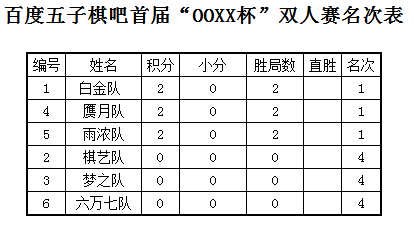
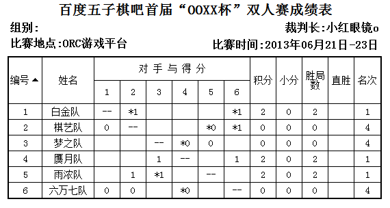

2013年百度五子棋吧首届“OOXX”杯双人赛规程
#1 2013年百度五子棋吧首届“OOXX”杯双人赛规程 作者：小红眼镜 发表时间：2013-6-20 11:04:06
五子棋吧首届“OOXX”杯双人赛
一、主办方：百度贴吧五子棋吧
二、比赛时间：2013年6月21-6月23日晚20:00
三、比赛地点：ORC游戏平台
四、比赛项目：双人赛（ORC联棋模式）
五、参赛人员：
白金队：五子棋黑白无常＆vector_nil
棋艺队：逸超人＆雄鹰王
梦之队：liyanan778＆Aec丶听梦
赝月队：超微羊刀＆wind2323
雨浓队：浓睡不消残酒愁＆FRESH雨
六万七队：罗源五子棋＆Ok670
六、竞赛办法：
1、本次比赛采用国家体育总局棋牌运动管理中心最新审定的《中国五子棋竞赛规则》（2013版）（以下简称《规则》）；执行指定开局。
2、赛制：单循环，共5轮。
3、比赛时限：每方30分钟，无读秒。超时判负。
4、名次区分办法：比较积分区分名次，积分高者名次列前；如积分相同则依次比较小分、胜局和直胜区分名次，均为高者列前；如再相同则为并列名次。
5、由于基于游戏平台对局而产生的各类特殊情况的处理，不应与《规则》的主要精神矛盾。
6、棋手比赛时不得查阅参考资料或使用任何形式的辅助计算工具，禁止与队友任何形式的交流，禁止悔棋。
7、因逃跑、断线或其他特殊情况导致棋局结束的，原则上根据游戏平台的自动判定，由裁判直接裁定比赛结果。经过双方协定，可申请复盘继续下，裁判拥有最终决定权。
8、对局棋手在提和后（未被对手同意）、对手未提和之前再次提和的，视为连续提和，可判违例一次。裁判认为对局棋手有明确且蓄意的行为可能对对手及对局本身造成干扰的，经提醒无效，可判违例一次。一场对局内出现二次违例的棋手直接判负。
七、对局棋手有对对手或对局本身的建议、意见和疑问的，可向裁判进行反映，裁判有责任做出正面回应。
八、本次比赛的裁判工作由小红眼镜o负责。本规程的最终解释权归小红眼镜o所有。未尽事宜，本着公平、公正的协商原则另行补充。
补充说明：
1、第一轮开始前，确定本队队员顺序，如白金队，1号：黑白、2号：nil，排序定后，最后一轮比赛结束前不得更换。
2、开局方队员编号为A1、A2，被开局方队员编号为B1、B2
3、比赛开始后，由A1向B1发出对局邀请、A2向B2发出对局邀请。
4、对局邀请设置：
规则选择：Yamaguchi
棋局类型：友谊
对局时间：30min
读秒时间：0
读秒步数：随意
5、两盘相关对局都成功邀请后，开局之前，由B1点击左下角回到大厅，右键A2B2的对局，提出联棋要求。B2接到请求后，接受联棋。
6、行棋顺序：
黑方：A1 白方：B1 黑方：A2 白方：B2
依此循环，每人一手。
［此帖子已被 小红眼镜 在 2013-6-20 11:07:43 编辑过］
［ 五子棋黑白无常 于 2013-6-20 11:20:09 时花20金币送鲜花一朵］
［ 五子棋黑白无常 于 2013-6-20 11:20:09 时花20金币送鲜花一朵］
［ 五子棋黑白无常 于 2013-6-20 11:20:09 时花20金币送鲜花一朵］
［ 五子棋黑白无常 于 2013-6-20 11:20:09 时花20金币送鲜花一朵］
［ 五子棋黑白无常 于 2013-6-20 11:20:09 时花20金币送鲜花一朵］
［ 五子棋黑白无常 于 2013-6-20 11:20:09 时花20金币送鲜花一朵］
［ 五子棋黑白无常 于 2013-6-20 11:20:09 时花20金币送鲜花一朵］
［ 五子棋黑白无常 于 2013-6-20 11:20:09 时花20金币送鲜花一朵］
［ 五子棋黑白无常 于 2013-6-20 11:20:09 时花20金币送鲜花一朵］
［ 五子棋黑白无常 于 2013-6-20 11:20:09 时花20金币送鲜花一朵］
［ 釣鱼岛岛主 于 2013-6-20 12:48:05 时花20金币送鲜花一朵］
［ 釣鱼岛岛主 于 2013-6-20 12:48:05 时花20金币送鲜花一朵］
［ 釣鱼岛岛主 于 2013-6-20 12:48:05 时花20金币送鲜花一朵］
［ 釣鱼岛岛主 于 2013-6-20 12:48:05 时花20金币送鲜花一朵］
［ 釣鱼岛岛主 于 2013-6-20 12:48:05 时花20金币送鲜花一朵］
［ 釣鱼岛岛主 于 2013-6-20 12:48:05 时花20金币送鲜花一朵］
［ 釣鱼岛岛主 于 2013-6-20 12:48:05 时花20金币送鲜花一朵］
［ 釣鱼岛岛主 于 2013-6-20 12:48:05 时花20金币送鲜花一朵］
［ 釣鱼岛岛主 于 2013-6-20 12:48:05 时花20金币送鲜花一朵］
［ 釣鱼岛岛主 于 2013-6-20 12:48:05 时花20金币送鲜花一朵］
［ 蚩尤血族 于 2013-6-21 0:14:51 时花20金币送鲜花一朵］
［ 蚩尤血族 于 2013-6-21 0:14:51 时花20金币送鲜花一朵］
［ 蚩尤血族 于 2013-6-21 0:14:51 时花20金币送鲜花一朵］
［ 蚩尤血族 于 2013-6-21 0:14:51 时花20金币送鲜花一朵］
［ 蚩尤血族 于 2013-6-21 0:14:51 时花20金币送鲜花一朵］
［ 蚩尤血族 于 2013-6-21 0:14:51 时花20金币送鲜花一朵］
［ 蚩尤血族 于 2013-6-21 0:14:51 时花20金币送鲜花一朵］
［ 厦门小天 于 2013-6-21 15:53:46 时花20金币送鲜花一朵］
［ 厦门小天 于 2013-6-21 15:53:46 时花20金币送鲜花一朵］
［ 厦门小天 于 2013-6-21 15:53:46 时花20金币送鲜花一朵］
［ 厦门小天 于 2013-6-21 15:53:46 时花20金币送鲜花一朵］
［ 厦门小天 于 2013-6-21 15:53:46 时花20金币送鲜花一朵］
［ 釣鱼岛岛主 于 2013-6-21 16:46:22 时花20金币送鲜花一朵］
［ 釣鱼岛岛主 于 2013-6-21 16:46:22 时花20金币送鲜花一朵］
［ 冷冷降温 于 2013-6-22 9:28:08 时花20金币送鲜花一朵］
［ 冷冷降温 于 2013-6-22 9:28:08 时花20金币送鲜花一朵］
［ 冷冷降温 于 2013-6-22 9:28:08 时花20金币送鲜花一朵］
#2 Re:2013年百度五子棋吧首届“OOXX”杯双人赛规程 作者：赛佐为 发表时间：2013-6-20 11:07:12
撒花~~~祝OOXX杯成功举办~~
也顺便为LZ祈祷，能够工作家庭两不误，不要因为业务太繁忙，造成后院失火啥的。。。
［ 小红眼镜 于 2013-6-20 11:08:19 时花20金币送鲜花一朵］
［ 小红眼镜 于 2013-6-20 11:08:19 时花20金币送鲜花一朵］
［ 小红眼镜 于 2013-6-20 11:08:19 时花20金币送鲜花一朵］
［ 釣鱼岛岛主 于 2013-6-21 16:45:55 时花20金币送鲜花一朵］
［ 釣鱼岛岛主 于 2013-6-21 16:46:44 时花20金币送鲜花一朵］
［ 釣鱼岛岛主 于 2013-6-21 16:46:44 时花20金币送鲜花一朵］
#3 Re:2013年百度五子棋吧首届“OOXX”杯双人赛规程 作者：五子棋黑白无常 发表时间：2013-6-20 11:12:09

［ 釣鱼岛岛主 于 2013-6-20 19:35:35 时花20金币送鲜花一朵］
［ 釣鱼岛岛主 于 2013-6-20 19:35:35 时花20金币送鲜花一朵］
［ 釣鱼岛岛主 于 2013-6-20 19:35:35 时花20金币送鲜花一朵］
［ 小红眼镜 于 2013-6-21 0:10:20 时花20金币送鲜花一朵］
［ 小红眼镜 于 2013-6-21 0:10:20 时花20金币送鲜花一朵］
［ 小红眼镜 于 2013-6-21 0:10:20 时花20金币送鲜花一朵］
#4 Re:2013年百度五子棋吧首届“OOXX”杯双人赛规程 作者：小红眼镜 发表时间：2013-6-20 12:10:48
黑白浓睡再次对决，是命运的作弄，还是月老的红线？这段缘，何去何从……故事大王778幸运牵手超级新人王听梦，
是梦之队还是做梦之队亦或者是梦游之队……
六万七的世界不解之迷，你是否已经猜到？
吧宝670是否会再次弈出神之一手？而大罗源又是否是浓睡派遣的卧底……
分别由两大清华学子领衔的赝月和棋艺两支队，他们是愿意寂寞独守空悲月，还是会愤然抵抗站起撸？
这一切，都即将揭晓....欢迎关注明日开战的《OOXX之战》
#5 Re:2013年百度五子棋吧首届“OOXX”杯双人赛规程 作者：掌棋如烟 发表时间：2013-6-20 12:33:47
好基情的样子……［ 釣鱼岛岛主 于 2013-6-20 19:35:49 时花20金币送鲜花一朵］
［ 釣鱼岛岛主 于 2013-6-20 19:35:49 时花20金币送鲜花一朵］
［ 釣鱼岛岛主 于 2013-6-20 19:35:49 时花20金币送鲜花一朵］
［ 小红眼镜 于 2013-6-21 0:10:42 时花20金币送鲜花一朵］
［ 小红眼镜 于 2013-6-21 0:10:42 时花20金币送鲜花一朵］
［ 小红眼镜 于 2013-6-21 0:10:42 时花20金币送鲜花一朵］
#6 Re:2013年百度五子棋吧首届“OOXX”杯双人赛规程 作者：釣鱼岛岛主 发表时间：2013-6-20 19:41:00
基友泛滥的大百度五子棋贴吧群体，创办如此基情四射的双人赛。规模虽小，看点十足。［ 小红眼镜 于 2013-6-21 0:11:09 时花20金币送鲜花一朵］
［ 小红眼镜 于 2013-6-21 0:11:09 时花20金币送鲜花一朵］
［ 小红眼镜 于 2013-6-21 0:11:09 时花20金币送鲜花一朵］
#7 Re:2013年百度五子棋吧首届“OOXX”杯双人赛规程 作者：忧郁的双眼 发表时间：2013-6-20 21:05:11
OOXX杯，好邪恶的名字！！！［ 小红眼镜 于 2013-6-21 0:11:27 时花20金币送鲜花一朵］
［ 小红眼镜 于 2013-6-21 0:11:27 时花20金币送鲜花一朵］
［ 小红眼镜 于 2013-6-21 0:11:27 时花20金币送鲜花一朵］
［ 釣鱼岛岛主 于 2013-6-21 9:18:49 时花20金币送鲜花一朵］
［ 釣鱼岛岛主 于 2013-6-21 9:18:49 时花20金币送鲜花一朵］
［ 釣鱼岛岛主 于 2013-6-21 9:18:49 时花20金币送鲜花一朵］
#8 Re:2013年百度五子棋吧首届“OOXX”杯双人赛规程 作者：冰雪笑醉 发表时间：2013-6-20 22:48:29
XO杯
祝比赛圆满成功
［ 小红眼镜 于 2013-6-21 0:11:44 时花20金币送鲜花一朵］
［ 小红眼镜 于 2013-6-21 0:11:44 时花20金币送鲜花一朵］
［ 小红眼镜 于 2013-6-21 0:11:44 时花20金币送鲜花一朵］
［ 釣鱼岛岛主 于 2013-6-21 9:19:11 时花20金币送鲜花一朵］
［ 釣鱼岛岛主 于 2013-6-21 9:19:11 时花20金币送鲜花一朵］
［ 釣鱼岛岛主 于 2013-6-21 9:19:11 时花20金币送鲜花一朵］
#9 Re:2013年百度五子棋吧首届“OOXX”杯双人赛规程 作者：忧郁的双眼 发表时间：2013-6-20 22:49:53
楼上酒鬼#10 Re:2013年百度五子棋吧首届“OOXX”杯双人赛规程 作者：幾 发表时间：2013-6-20 23:16:46
赞这个比赛。这样的比赛越多越好［ 小红眼镜 于 2013-6-21 0:12:01 时花20金币送鲜花一朵］
［ 小红眼镜 于 2013-6-21 0:12:01 时花20金币送鲜花一朵］
［ 小红眼镜 于 2013-6-21 0:12:01 时花20金币送鲜花一朵］
［ 釣鱼岛岛主 于 2013-6-21 10:15:41 时花20金币送鲜花一朵］
［ 釣鱼岛岛主 于 2013-6-21 10:15:41 时花20金币送鲜花一朵］
［ 釣鱼岛岛主 于 2013-6-21 10:15:41 时花20金币送鲜花一朵］
#11 Re:2013年百度五子棋吧首届“OOXX”杯双人赛规程 作者：蚩尤血族 发表时间：2013-6-21 0:11:59
看上去好厉害的样子……［ 小红眼镜 于 2013-6-21 0:15:39 时花20金币送鲜花一朵］
［ 小红眼镜 于 2013-6-21 0:15:39 时花20金币送鲜花一朵］
［ 小红眼镜 于 2013-6-21 0:15:39 时花20金币送鲜花一朵］
［ 釣鱼岛岛主 于 2013-6-21 10:17:59 时花20金币送鲜花一朵］
［ 釣鱼岛岛主 于 2013-6-21 10:17:59 时花20金币送鲜花一朵］
［ 釣鱼岛岛主 于 2013-6-21 10:17:59 时花20金币送鲜花一朵］
#12 Re:2013年百度五子棋吧首届“OOXX”杯双人赛规程 作者：一块金子 发表时间：2013-6-21 8:32:04
凑个热闹
［ 釣鱼岛岛主 于 2013-6-21 10:18:19 时花20金币送鲜花一朵］
［ 釣鱼岛岛主 于 2013-6-21 10:18:19 时花20金币送鲜花一朵］
［ 釣鱼岛岛主 于 2013-6-21 10:18:19 时花20金币送鲜花一朵］
［ 小红眼镜 于 2013-6-21 16:32:48 时花20金币送鲜花一朵］
［ 小红眼镜 于 2013-6-21 16:32:48 时花20金币送鲜花一朵］
［ 小红眼镜 于 2013-6-21 16:32:48 时花20金币送鲜花一朵］
#13 Re:2013年百度五子棋吧首届“OOXX”杯双人赛规程 作者：白衣神童小剑魔 发表时间：2013-6-21 10:25:17
 我是来收红花的
我是来收红花的［ 釣鱼岛岛主 于 2013-6-21 11:18:57 时花20金币送鲜花一朵］
［ 釣鱼岛岛主 于 2013-6-21 11:18:57 时花20金币送鲜花一朵］
［ 釣鱼岛岛主 于 2013-6-21 11:18:57 时花20金币送鲜花一朵］
［ 小红眼镜 于 2013-6-21 16:33:19 时花20金币送鲜花一朵］
［ 小红眼镜 于 2013-6-21 16:33:19 时花20金币送鲜花一朵］
［ 小红眼镜 于 2013-6-21 16:33:19 时花20金币送鲜花一朵］
#14 Re:2013年百度五子棋吧首届“OOXX”杯双人赛规程 作者：自来水 发表时间：2013-6-21 15:43:24
 支持一下
支持一下［ 釣鱼岛岛主 于 2013-6-21 16:09:07 时花20金币送鲜花一朵］
［ 釣鱼岛岛主 于 2013-6-21 16:09:07 时花20金币送鲜花一朵］
［ 釣鱼岛岛主 于 2013-6-21 16:09:07 时花20金币送鲜花一朵］
［ 小红眼镜 于 2013-6-21 16:33:42 时花20金币送鲜花一朵］
［ 小红眼镜 于 2013-6-21 16:33:42 时花20金币送鲜花一朵］
［ 小红眼镜 于 2013-6-21 16:33:42 时花20金币送鲜花一朵］
#15 Re:2013年百度五子棋吧首届“OOXX”杯双人赛规程 作者：赛佐为 发表时间：2013-6-21 16:37:14
好多花花。。。。。［ 小红眼镜 于 2013-6-21 17:57:51 时花20金币送鲜花一朵］
［ 小红眼镜 于 2013-6-21 17:57:51 时花20金币送鲜花一朵］
［ 小红眼镜 于 2013-6-21 17:57:51 时花20金币送鲜花一朵］
#16 Re:2013年百度五子棋吧首届“OOXX”杯双人赛规程 作者：王莱顿 发表时间：2013-6-21 22:03:04
希望比赛热热闹闹的,祝比赛圆满成功~［ 小红眼镜 于 2013-6-22 8:31:50 时花20金币送鲜花一朵］
［ 小红眼镜 于 2013-6-22 8:31:50 时花20金币送鲜花一朵］
［ 小红眼镜 于 2013-6-22 8:31:50 时花20金币送鲜花一朵］
［ 釣鱼岛岛主 于 2013-6-22 9:37:44 时花20金币送鲜花一朵］
［ 釣鱼岛岛主 于 2013-6-22 9:37:44 时花20金币送鲜花一朵］
［ 釣鱼岛岛主 于 2013-6-22 9:37:44 时花20金币送鲜花一朵］
#17 Re:2013年百度五子棋吧首届“OOXX”杯双人赛规程 作者：小红眼镜 发表时间：2013-6-22 8:32:32
首日战报
2013年6月21日晚上8点整，
百度五子棋吧首届“
OOXX
杯”五子棋双人赛
正式在ORC游戏平台打响。
本次比赛共12人，分成6支队伍。采取单循环赛制。
今天结束两轮比赛，虽然第一轮开始前由于恰逢ORC间歇性大姨妈降临，用注册ID上去后总是掉线，不过很快大家重新换了游客号顺利开始比赛。
下边我简单说说比赛进程。更多详细内容请参见各位棋手写的自战解说。
第一轮
1、故事大王778率领的梦之队，因为网络原因刚行至18手，定式还没摆完，就草草投子认输。赝月队顺利拿到第一分！
2、由黑白大神和nil组成的白金队，对阵大罗源与吧宝670组成的六万七队的比赛中，双方激情四射，好不潇洒，无奈六万七队一失足成千古恨……激情的背后，是难以下咽的苦逼长连禁手。
3、五子棋吧新人赛冠军浓睡妹子！全国团赛高校组冠军最佳一台新雨！
强强联合的雨浓队，出乎预料的首轮就遭遇苦战！
棋艺队天逸和雄鹰王在瑞星局中，执黑与对手缠缠绵绵，应该是一开始就做好打持久战的准备。
但无奈姜还是老的辣！在对时间的把握上，雨浓队明显更深一筹，充分利用包干制的特点，在最后阶段逼迫黑棋犯错，拿下第一分！
第二轮
1、白金队继续强势出击，以一波势不可挡的攻击，顺利拿下棋艺队！
2、六万七队对阵wind和羊刀组成的赝月队的对局中，本以为会一场势均力敌的战斗，结果，却意外的早早结束，吧宝670！你认错么？！
3、夺冠热门雨浓队，在第一轮的苦战之后，居然再次陷入苦战！
而这轮的对手，居然是赛前一致认为除了垫底也只能垫底的超级梦游之队——梦之队！
大神778带领刚学棋半年不到的听梦面对雨浓队的一波波攻势，沉着应对，冷静防守，居然都撑过来了。眼看棋盘空间不断缩小，黑棋的资源开始支离玻碎，和棋的希望越来越大……
但！他们忽略了时间！于是……超时负！
总结今天：谁说倒数第一没悬念的！！！！

两轮结束后，成绩如下：


［此帖子已被 小红眼镜 在 2013-6-22 16:25:17 编辑过］
#18 Re:2013年百度五子棋吧首届“OOXX”杯双人赛规程 作者：冷冷降温 发表时间：2013-6-22 9:27:29
 好热闹的样子，可惜无缘观战，
好热闹的样子，可惜无缘观战， 还是看棋评去吧
还是看棋评去吧［ 釣鱼岛岛主 于 2013-6-22 9:42:26 时花20金币送鲜花一朵］
［ 釣鱼岛岛主 于 2013-6-22 9:42:26 时花20金币送鲜花一朵］
［ 釣鱼岛岛主 于 2013-6-22 9:42:26 时花20金币送鲜花一朵］
#19 Re:2013年百度五子棋吧首届“OOXX”杯双人赛规程 作者：掌棋如烟 发表时间：2013-6-22 11:33:29
“间歇性大姨妈降临”......#20 Re:2013年百度五子棋吧首届“OOXX”杯双人赛规程 作者：刘琦林 发表时间：2013-6-22 15:46:25
噗 。。。［ 小红眼镜 于 2013-6-22 16:36:37 时花20金币送鲜花一朵］
［ 小红眼镜 于 2013-6-22 16:36:37 时花20金币送鲜花一朵］
［ 小红眼镜 于 2013-6-22 16:36:37 时花20金币送鲜花一朵］
#21 Re:掌棋如烟【==Re:2013年百度五子棋吧首届“OOXX”杯双人赛规程==】 作者：小红眼镜 发表时间：2013-6-22 16:36:15
引用：
原文由 掌棋如烟 发表于 2013-6-22 11:33:29 :
“间歇性大姨妈降临”......小红眼镜，你在哪学到的这个专业词汇....难道你已经成功渗透到妇联了么，小心极地跟你翻脸
 。。。。。。。科学思维加上一丢丢常识。。。灭哈哈
。。。。。。。科学思维加上一丢丢常识。。。灭哈哈
#22 Re:2013年百度五子棋吧首届“OOXX”杯双人赛规程 作者：吉小鼠 发表时间：2013-6-23 0:14:43
听说有花~
［ 小红眼镜 于 2013-6-23 8:40:55 时花20金币送鲜花一朵］
［ 小红眼镜 于 2013-6-23 8:40:55 时花20金币送鲜花一朵］
［ 小红眼镜 于 2013-6-23 8:40:55 时花20金币送鲜花一朵］
［ 釣鱼岛岛主 于 2013-6-23 9:11:51 时花20金币送鲜花一朵］
［ 釣鱼岛岛主 于 2013-6-23 9:11:51 时花20金币送鲜花一朵］
［ 釣鱼岛岛主 于 2013-6-23 9:11:51 时花20金币送鲜花一朵］
#23 Re:2013年百度五子棋吧首届“OOXX”杯双人赛规程 作者：釣鱼岛岛主 发表时间：2013-6-23 16:35:51
由于不可抗拒的因素，比赛延后一天！［ 小红眼镜 于 2013-6-23 16:59:42 时花20金币送鲜花一朵］
#24 Re:小红眼镜【==Re:掌棋如烟【==Re:2013年百度五子棋吧首届“OOXX”杯双人赛规程==】==】 作者：忧郁的双眼 发表时间：2013-6-23 17:25:38
引用：身为妇女之友，专业妇科三十年，我居然OUT了？
原文由 小红眼镜 发表于 2013-6-22 16:36:15 :引用：
原文由 掌棋如烟 发表于 2013-6-22 11:33:29 :
“间歇性大姨妈降临”......小红眼镜，你在哪学到的这个专业词汇....难道你已经成功渗透到妇联了么，小心极地跟你翻脸
［ 小红眼镜 于 2013-6-24 10:55:36 时花20金币送鲜花一朵］
#25 Re:2013年百度五子棋吧首届“OOXX”杯双人赛规程 作者：釣鱼岛岛主 发表时间：2013-6-23 17:46:01
楼上主要是在泰国待的时间太长，好多东西还是不太一样的。#26 Re:2013年百度五子棋吧首届“OOXX”杯双人赛规程 作者：小红眼镜 发表时间：2013-6-24 10:50:08
第二个比赛日战报原本定于6月22日（周六）进行的第三轮、第四轮比赛，由于恰逢ORC大姨妈血崩，几乎完全瘫痪，只好顺延一天到6月23日（周日）……
所幸的是，昨天晚上的ORC状态不错，虽然偶有略卡现象，但不至于影响到整体的正常对弈。
截止至发稿前，已经结束了四轮对局。今晚将会迎来最后一轮的决战！
谁将会是冠军，谁又会是倒一……一切都将在今晚揭晓。
这里简单介绍一下昨日比赛情况。详细情况请参加各棋手自战解说。
第三轮对局
1、棋艺队与六万七队
同是两连败，都想从对方身上取得一分，但谁人能成功？
浦月开局之后，执黑的六万七队一度优势巨大，眼看就要将胜利揽入怀中。
但可惜的是，由于操之过急，在细节的处理上考虑不够好，胜机渐渐溜走。
正所谓，错杀了赢不了，尚可接受，至少可以往和棋走，但输棋是万万不可接受的。
无奈……伟大的吧宝670在比赛当中，居然数次进入神游太虚状态……无端端浪费大把时间，最后可怜的六万七队，只能在倒计时的读秒提醒声中，吞下超时的苦果。
棋艺队顺利开张拿到第一分！
2、白金队与梦之队
第一个比赛日与雨浓队的比赛中，梦之队发挥超常，险些逼和雨浓队，赛后，大神778更是发帖大赞大家低估了新人听梦的实力。本轮比赛。再次面对同样是夺冠大热门的白金队，梦之队是否能够继续有精彩上演？
疏星开局，白8抢先变招？还是……不小心点歪了囧。。。不管如何……似乎是让对手凌乱了一下，弈至15手，新人听梦出现严重判断失误，居然无视白棋左边的巨大优势，而选择干掉蹲在右下角打酱油的白棋眠三。。。
于是……白棋开始了绵绵不绝微风里，活三活三搞死你的伟大征程。。之后，尽管黑棋做出了顽强的抵抗……但，势已成……白金队以一套漂亮的VCT绝杀梦之队。
3、雨浓队与赝月队
赝月队首日表现不错，取得两连胜，保持在第一集团。这轮碰上夺冠热门雨浓队，也是兽血沸腾，欲与天公试比高。开出流星局，准备出其不意，杀对手一个措手不及。
BUT，从整个对局进程来看，执黑的赝月队在对局的把握上的确稍逊一筹，在拥有先手之时，攻的太过直白强硬，面对白棋的精准防守，很快就丢失了先手。最后，雨浓队以一个漂亮VCT取胜本轮。
第四轮对局
1、本轮由于六万七队的670大师要上晚自习，所以与雨浓队的对局顺延到今日。
2、白金队，继续势如破竹，残月开局后，迅速取得优势，并拿下赝月队。从赝月队与白金队和雨浓队的对局中，可以发现相对比两支夺冠队伍，实力还是稍逊一筹。不过比起那几个酱油大王组成的队伍，赝月队已经有两分入账！稳居第三！
3、梦之队与棋艺队
连续经历两场苦战的梦之队，在这轮的比赛中，再次爆发小宇宙，在明星局的对弈中，大神778与小将听梦配合默契，好手频出，全盘占优，并最后将优势转变为胜势，终于实现屌丝的逆袭拿下宝贵的一分，顺利脱离蛋蛋集团。
总结昨日： 梦之队的逆袭，蛋蛋集团只留六万七。
今晚看点：
白金队与雨浓队的强强对话，谁将笑到最后？
蛋蛋集团唯一成员六万七队三战三负，今晚是否会否极泰来迎来超级大逆袭，一举消灭浓睡队，为白金队的夺冠贡献一份力量？
如果逆袭失败，那么在与梦之队的巅峰对决中又是否能够顺利破蛋而出最终摆脱垫底命运？
#27 Re:忧郁的双眼【==Re:小红眼镜【==Re:掌棋如烟【==Re:2013年百度五子棋吧首届“OOXX”杯双人赛规程==】==】==】 作者：小红眼镜 发表时间：2013-6-24 10:51:08
引用：
原文由 忧郁的双眼 发表于 2013-6-23 17:25:38 :引用：身为妇女之友，专业妇科三十年，我居然OUT了？
原文由 小红眼镜 发表于 2013-6-22 16:36:15 :引用：
原文由 掌棋如烟 发表于 2013-6-22 11:33:29 :
“间歇性大姨妈降临”......小红眼镜，你在哪学到的这个专业词汇....难道你已经成功渗透到妇联了么，小心极地跟你翻脸
 今日再学一词……大姨妈血崩！
今日再学一词……大姨妈血崩！
#28 Re:2013年百度五子棋吧首届“OOXX”杯双人赛规程 作者：掌棋如烟 发表时间：2013-6-24 14:02:49
擦…太刺激了，出门扶墙，掩面奔走……你们，后继有人了…青出于蓝胜于蓝，长江后浪，一浪更比一浪高哇………#29 Re:2013年百度五子棋吧首届“OOXX”杯双人赛规程 作者：小红眼镜 发表时间：2013-6-27 15:05:01
以下是后边几盘棋的简单评论：
1、白金队与雨浓队
关乎最终冠军归属的关键之战，对局中，雨浓队从头到尾把握着先手，并且不断的给对手施压，无奈对手同样发挥出色。随着时间的流逝，本以为双方会进入最后的拼网速阶段，无奈ORC突然严重崩溃！由于崩溃前局面已经趋向和棋，加上双方所剩时间也基本相差无几，经过协商，双方同意和棋收场。这样，白金队完成了全部5轮对局，以4.5分抢先登上冠军宝座。而雨浓队则还需要在对六万七队的对局中胜出才能与白金队携手捧起冠军奖杯。
2、六万七队与梦之队
从本次比赛的表现来看，这两支队伍的碰撞应该属于实力相当的对抗，双方在疏星一打的对战中，梦之队执黑不急不躁，慢慢扩大优势，而执白的六万七队双方都似乎并不怎么在状态，很快就下出弱手。梦之队抓住机会，以一个简单的VCT顺利拿下本局，取得本次比赛的第二分入账，也将自己的名次定格为第四名！
3、赝月队与棋艺队
本次比赛中，爆冷输给梦之队的棋艺队，在这最后一轮前，仅积一分！而反观赝月队则是该赢的赢了，赢不了的也没赢。。可以说是发挥很稳定。目前除了输给明显高于自己的白金队和雨浓队，已经拿下两分。本轮对局中，棋艺队赛后透露策略是让黑棋先攻，等待黑棋优势耗尽之时再发起总攻，结果。。似乎。。他们忽略了一个关键性的问题——时间。。于是，在黑棋的优势耗尽之前。。他们先迎来了超时的悲惨结局。不过从棋本身的内容来看，本盘棋双方下的还是可圈可点，攻防的转换双方把握都挺好的，赝月队由于对局的时间把握上更胜一筹而顺利取得第三分，稳居第三名。
4、雨浓队与六万七队
背水一战的六万七队，迫切需要一胜来打破蛋蛋的诅咒，而雨浓队也很需要一场胜利来将自己推上冠军宝座。本局就是在这样一种背景下进行的。比赛开始后，溪月对局中，六万七队执黑，吧宝670在第七手！就奇迹般的弈出了大恶手！白棋可以三步简单抓双三禁手！难道这盘就要这么迅速的结束？雨浓队新雨白8活三！令人惊讶的一手！局面顿时变得激烈起来，白10要是在F8会是怎样一种情况呢？不得而知，实战浓睡选择了另一个比较保守的白10，弈至13手，优势巨大！白14无奈，黑这时是否可以连续进攻取胜呢？稍微一算可以发现黑棋下方可以有大量的连续进攻资源！结果，可能是由于太过担心，670选择了温和的一手挡活二做活二。而白棋也获得了一次喘息的机会。此后，黑棋越走越挫，白棋越战越勇！至32手，黑棋投子认输。雨浓队顺利与白金队并列冠军。而六万七队。。也遗憾的只能以无论零蛋的战绩收场。。